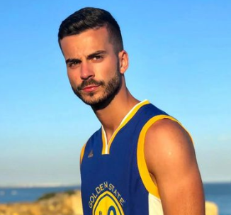

About Me
Home
Localidade

Diogo Bernardes
Chamo-me Diogo Bernardes, tenho 22 anos e resido em Atães, Vila Verde, Braga.
Desde que me lembro que o desporto faz parte da minha vida, pratiquei futebol federado durante 11 anos e atualmente prático ginásio
regularmente. Para além do desporto, a informática e a programação sempre foi algo pela qual me interessei, motivo pelo qual decidi seguir
os meus estudos nessa área.
Atualmente, tenho um CTESP em Programação Sistemas Informáticos realizado no IPMAIA e estou a tirar a Licenciatura em Engenharia Informática
no IPVC, sendo que o meu principal objetivo neste momento é concluir a Licenciatura com sucesso.